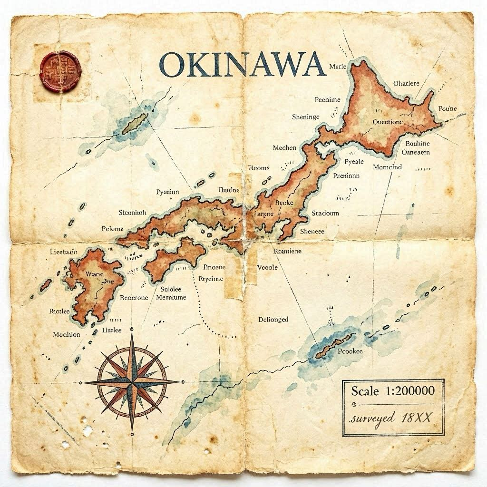
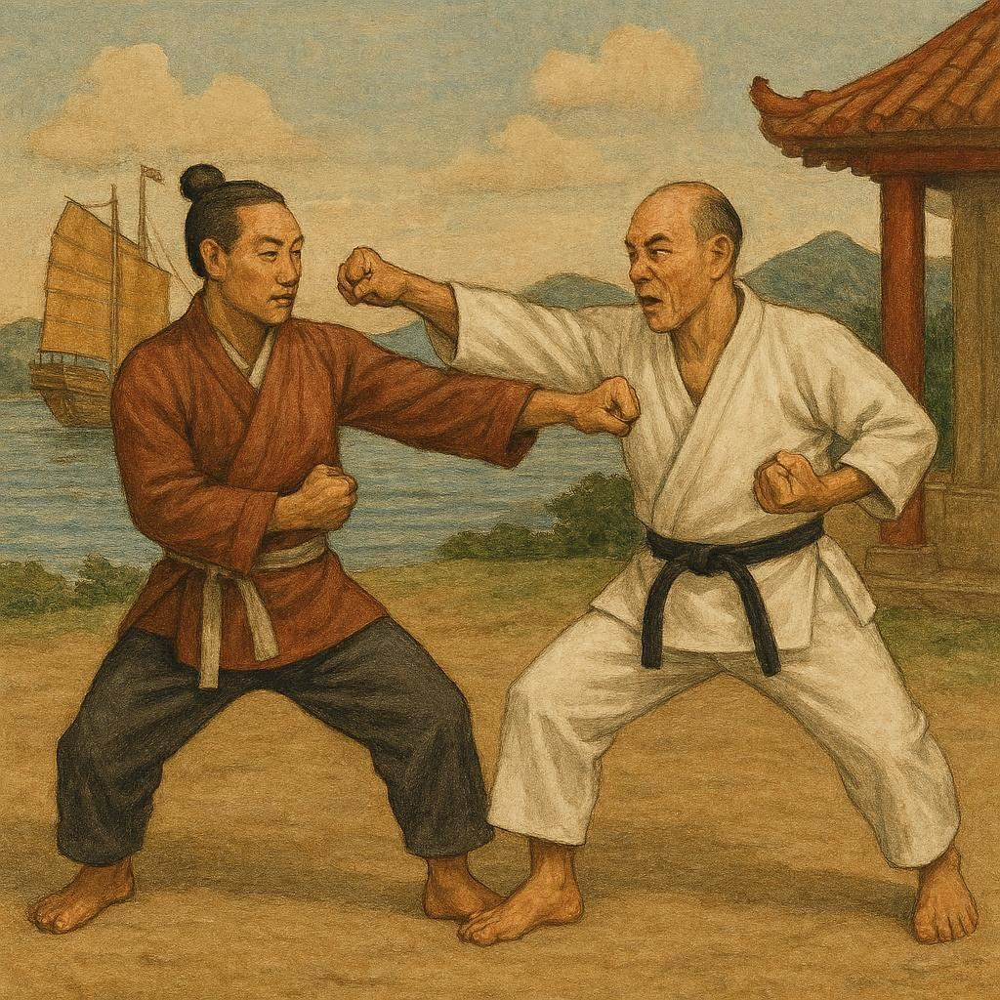
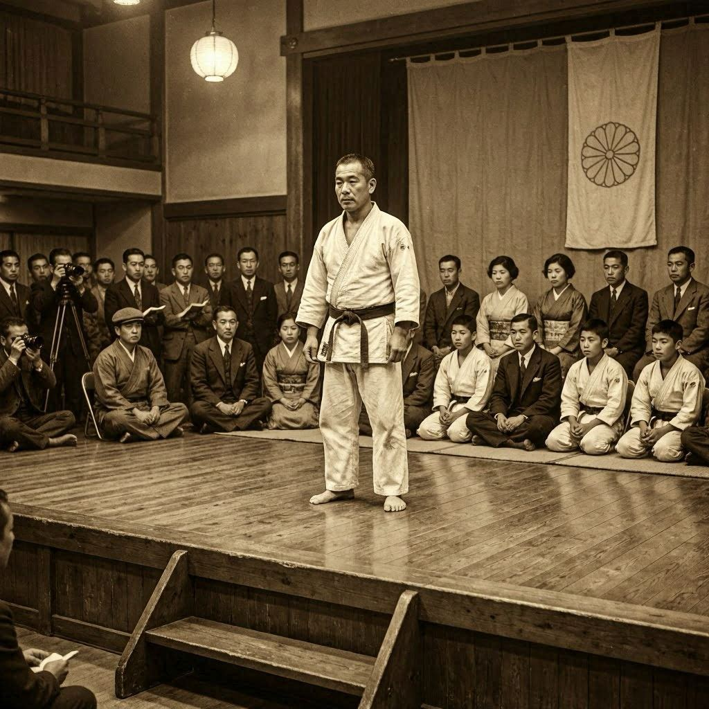
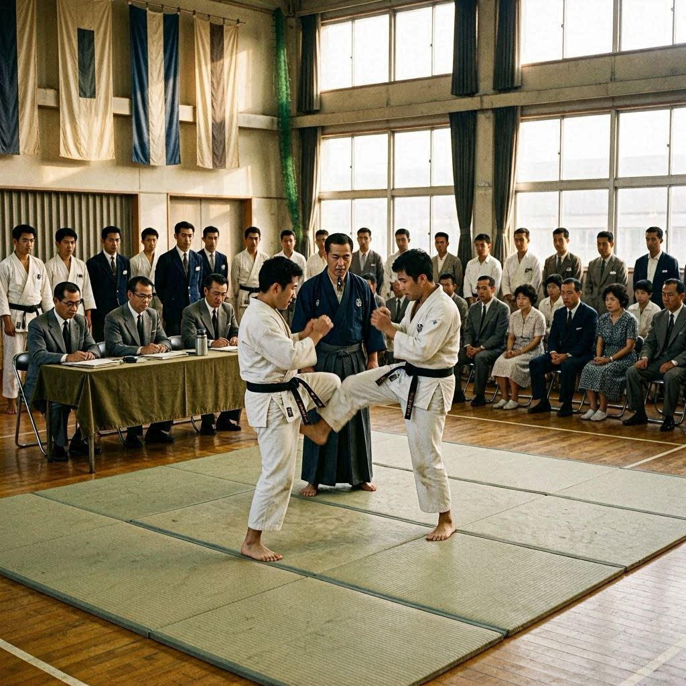
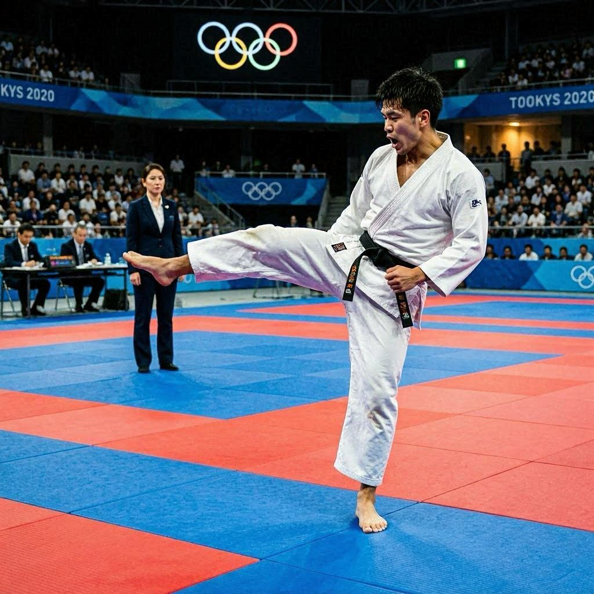
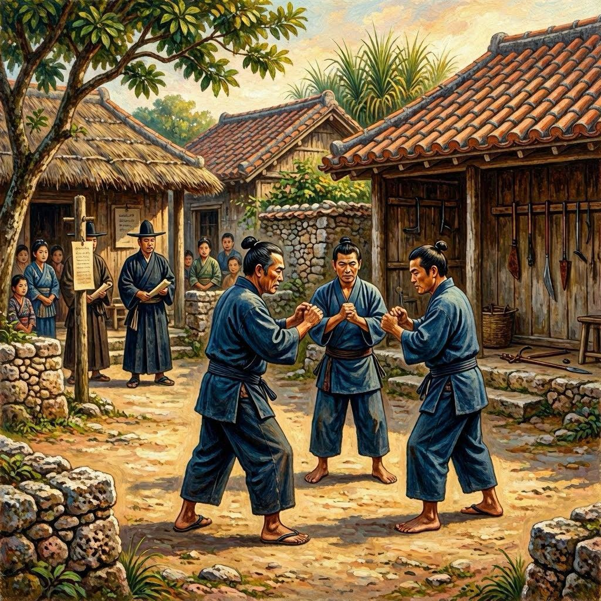
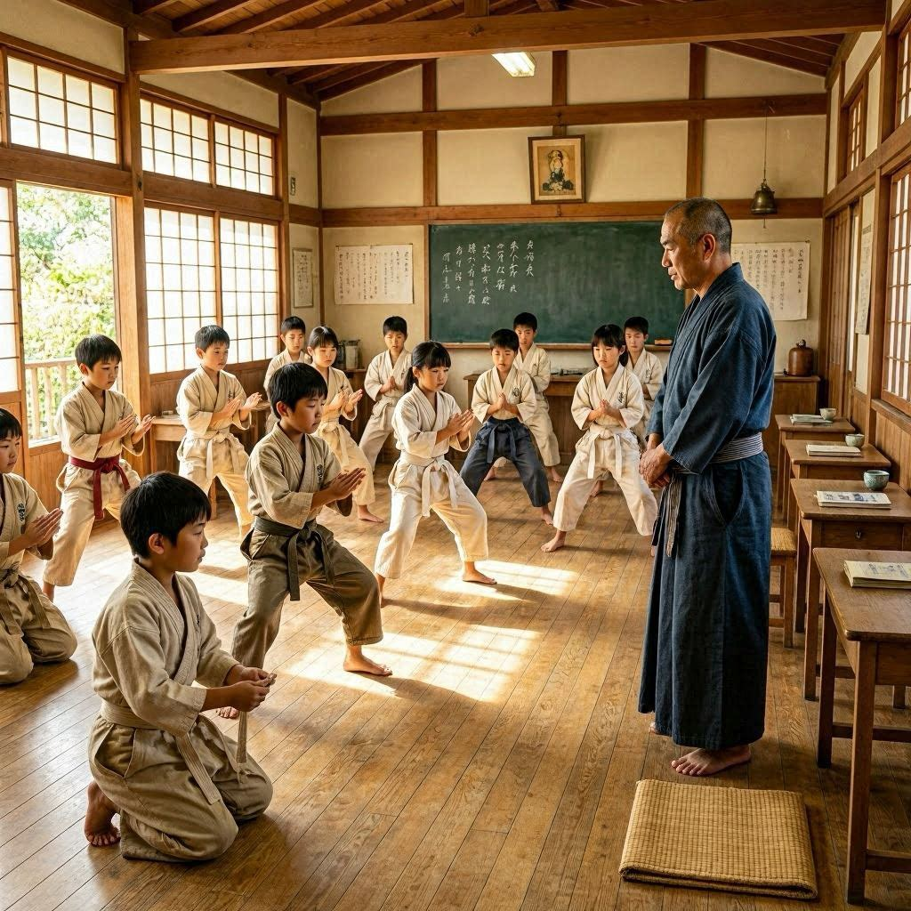
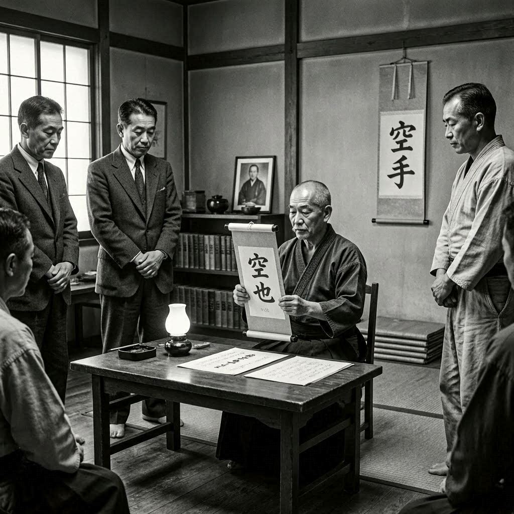
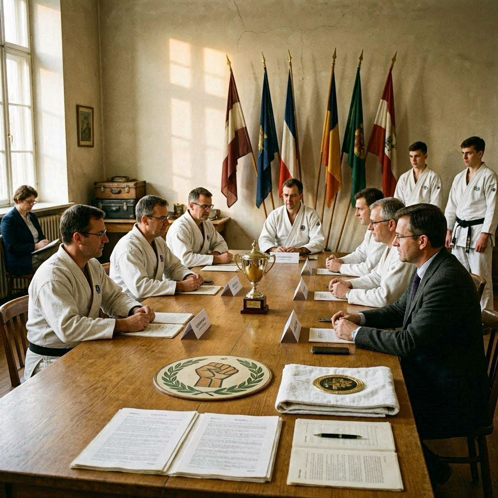
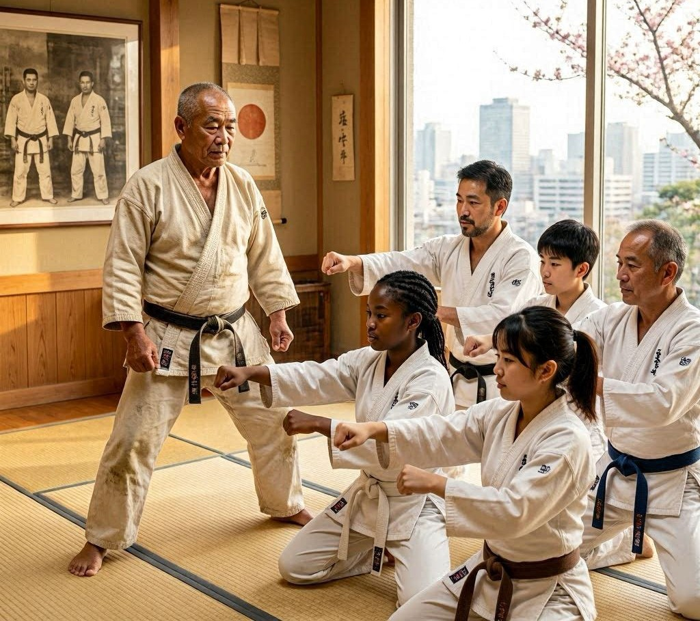

A HISTÓRIA DO KARATÊ
Redação
O karatê é uma arte marcial que surgiu nas ilhas de Okinawa, no Japão, resultado da combinação entre técnicas locais de combate e influências das artes marciais chinesas. Sua origem remonta a vários séculos atrás, quando os habitantes da região desenvolveram métodos de defesa pessoal para se proteger em uma época marcada por conflitos e restrições ao porte de armas. Com o passar do tempo, essas técnicas foram sendo aperfeiçoadas e transmitidas de geração em geração, tornando-se parte importante da cultura local.
Durante os séculos XV e XVI, Okinawa manteve intensas relações comerciais com a China, o que favoreceu a troca de conhecimentos culturais e militares. Diversos mestres chineses influenciaram o desenvolvimento das práticas de combate da região, contribuindo para a criação de um sistema mais estruturado. Dessa fusão nasceu o chamado "Te" ou "Tode", considerado o precursor do karatê moderno. Nessa fase, o treinamento era realizado de forma discreta e geralmente restrito a pequenos grupos de praticantes.
No final do século XIX e início do século XX, o karatê começou a ganhar reconhecimento fora de Okinawa. Um dos principais responsáveis por sua divulgação foi o mestre Gichin Funakoshi, que apresentou a arte marcial ao restante do Japão. Funakoshi promoveu importantes adaptações na prática e na filosofia do karatê, enfatizando não apenas a eficiência técnica, mas também a formação do caráter, da disciplina e do respeito. Sua atuação foi fundamental para que o karatê fosse aceito em escolas, universidades e instituições esportivas japonesas.
Com a expansão da modalidade, diferentes estilos passaram a surgir, cada um com características próprias de treinamento e execução de técnicas. Entre os mais conhecidos estão o Shotokan, o Goju-Ryu, o Shito-Ryu e o Wado-Ryu. Apesar das diferenças, todos compartilham princípios fundamentais como autocontrole, perseverança, respeito ao próximo e constante busca pelo aperfeiçoamento pessoal.
Após a Segunda Guerra Mundial, o karatê se espalhou rapidamente por diversos países. Militares, estudantes e mestres japoneses ajudaram a difundir a prática em diferentes continentes, levando à criação de academias, federações e campeonatos internacionais. Com isso, o karatê deixou de ser uma arte marcial regional para se tornar uma atividade praticada por milhões de pessoas em todo o mundo. Seu crescimento também estimulou a padronização de regras para competições e a realização de eventos de grande porte.
Atualmente, o karatê é reconhecido tanto como esporte quanto como ferramenta de desenvolvimento físico e mental. Seus treinamentos incluem técnicas de ataque, defesa, movimentação, equilíbrio e concentração, além do estudo dos katas, sequências de movimentos que preservam os ensinamentos tradicionais da arte. Mais do que aprender a lutar, os praticantes buscam desenvolver valores como disciplina, humildade, coragem e respeito. Essa combinação entre tradição, filosofia e eficiência técnica explica por que o karatê continua sendo uma das artes marciais mais populares e admiradas do mundo.
Linha do Tempo
As bases do karatê começaram a surgir em Okinawa durante o século XV. Os habitantes da região desenvolveram métodos de defesa pessoal que combinavam técnicas locais de combate com influências de outros povos asiáticos. Esses conhecimentos foram aperfeiçoados ao longo do tempo e deram origem às primeiras formas da arte marcial.

1477
Durante o século XVII, o contato comercial entre Okinawa e a China trouxe novas técnicas e conhecimentos de combate. A união entre os métodos locais e chineses contribuiu para a criação de estilos mais completos e organizados, fortalecendo a evolução do karatê.

1901
Em 1922, o mestre Gichin Funakoshi apresentou o karatê em Tóquio. A demonstração despertou grande interesse e marcou o início da expansão da arte marcial pelo Japão, contribuindo para seu reconhecimento nacional.

1936
O primeiro campeonato nacional de karatê do Japão ocorreu em 1957. O evento incentivou a criação de regras mais organizadas para competições e contribuiu para o crescimento da modalidade como esporte.

1970
O karatê estreou nos Jogos Olímpicos de Tóquio em 2021. Esse momento representou um importante reconhecimento internacional da modalidade, destacando sua tradição, técnica e popularidade mundial.

2026
1400

Em 1477, os governantes de Okinawa restringiram o uso de armas pela população. Como resultado, muitas pessoas passaram a aperfeiçoar técnicas de combate desarmado para sua proteção. Esse acontecimento teve grande importância no desenvolvimento do karatê.
1600

Em 1901, o karatê passou a ser ensinado oficialmente nas escolas de Okinawa. Além do condicionamento físico, a prática era utilizada para desenvolver disciplina, respeito e responsabilidade entre os estudantes. Essa mudança ajudou a popularizar a modalidade.
1922

Em 1936, mestres da modalidade adotaram oficialmente o termo “karatê”, que significa “mãos vazias”. A decisão reforçou a identidade da arte marcial e ajudou na padronização dos seus ensinamentos e princípios.
1957

Em 1970 foi criada a World Karate Federation, responsável por organizar competições internacionais. A entidade ajudou a expandir e padronizar a prática do karatê em diversos países.
2021

Atualmente, o karatê é praticado por milhões de pessoas em todo o mundo. Além das competições, continua sendo valorizado pelos benefícios físicos, mentais e pelos princípios de disciplina, respeito e autocontrole que transmite aos praticantes.